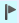

Appointment Cancellation List
Introduced in version 6.05, this feature allows patients to be put on a list of those who would like to have an appointment earlier than the one they are scheduled for. If a cancellation occurs, a list of names can be popped up, patients called, and the newly open time slot quickly filled.
Adding a Patient to the Cancellation List
- Schedule an appointment for the patient in an available time slot.
- When the Appointment Details screen pops up, check the Add to Cancellation List box.

- Click Save, or Cancel to abandon changes. The appointment will appear with a flag

on the appointment grid to indicate that it's been added to the Cancellation List. (see example)
Filling a Cancellation Time Slot
- When a patient cancels an appointment and an open time slot becomes available, right-click on the empty time slot. Left-click on Fill Cancellation.

 Note: the time slot must be empty for "Fill Cancellation" to be active. If Cancelled appointments still appear in the appointment grid, you will need to change the "Show in Calendar" setting in Appointment Status setup for the Fill Cancellation popup to be active.
Note: the time slot must be empty for "Fill Cancellation" to be active. If Cancelled appointments still appear in the appointment grid, you will need to change the "Show in Calendar" setting in Appointment Status setup for the Fill Cancellation popup to be active.
- The Cancellation List will popup. The list contains the name and appointment details of all the patients who have had the Add to Cancellation List box checked. Hover the mouse cursor over the Notes column to see the full notes on the appointment.

- The details of the available opening will be at the top of the window.

- The list will initially be sorted by the Date Updated date and time from the original appointment. This means the first appointment to be edited/added to the list will be at the top.
- You can sort the list by any of the other details by clicking on the column header. For example, click on the heading "Appt Type" to sort by appointment type in ascending order. Click again to change to descending order.

- The patient's primary phone number will be displayed, so that you can use this list to call and confirm if the patient would like to switch to the earlier date. You can also print the list by clicking on the print icon
 .
. - Select the line containing the patient who will fill the time slot, and click OK. A confirmation message will popup.

- Click Yes to complete the move, or No to cancel.
- If the patient still would like to be considered for an earlier opening, open the appointment details and recheck the Add to Cancellation List box.